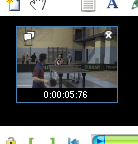
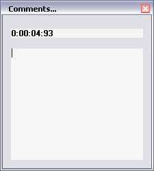
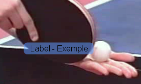
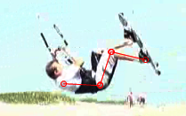
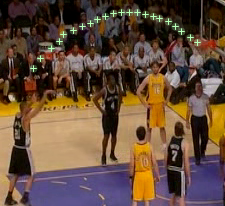
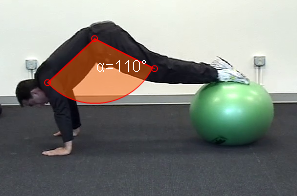
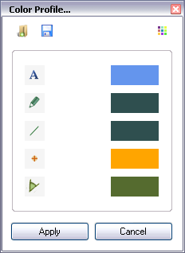
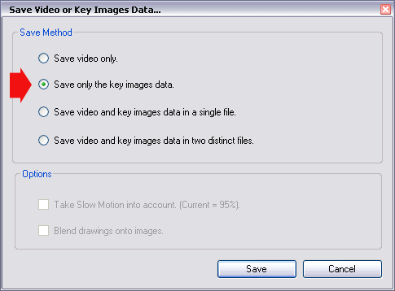

Handling Key Images
A Key Image is a position of special interest to you.
It
could be a reference image you would like to enhance with comments, a
technical pose to highlight with drawings, a link point in motion flow,
etc...
This step by step guides you through the following operaitions:
Add a Key Image, Add Comments,
Add Drawings, Save and Import Key Images data.
Manipulating Key Images is done with the dedicated tool bar, right under the main video display:
1. Add a Key Image
Move to the position you find interesting in the video and click the Add Key Image button : .
The Key Images toolbar unfolds and a thumbnail of the current image appears.
The current image is now registered as a Key Image, however there is no particular information attached to it.

There is no limit to the number of image you can turn into Key Images.
To remove an image from the Key Image list, use its close button in the upper right corner of the thumbnail : .
2. Add Comments
When the video play head is on an existing Key Image, the thumbnail has a blue contour.
Use the Add Comment button : , to display the comments window:

By default, the title zone is filled with the time marker of the image.
Change the title as you see fit and add a comment in the bottom zone.
You can move around and resize this comment window to ease its edition.
3. Add Drawings
You can add visual indicators to highlight some analysis points or make measurements.
Once such a drawing is in place, you can drag it around.
For some of them, you can change the aspect using circular handles. (Line and Angle)
: Writing a Label.
To edit a Label that was previously added, double click on it.

: Free hand drawing with pencil.
: Line tracing.

: Cross Marker placement.

: Angle measurement.

: Import all drawings from the previous Key Image into the current image.
To remove a drawing, right click it and choose "Delete".
Drawings color is determined by the color profile at the time the tool is used.
You can access the color profile through the button : .

You can change the color of each drawing type independently.
Drawings already on image will not change color, the change will be effective for the next drawings you will do.
4. Save and Import Key Images Data
You can export and import Key Images data (Comments and Drawings) independently from the video.
This
let you share your work with a partner, perform several analysis
on the same video, or import a set of Drawings from a similar video.
After having set a few Key Images and added some drawings and comments, you want to transfer those drawings to another video:
Use the menu : File > Save the Video or Key Images data...
Choose the option "Save only the Key Images data".

The data are saved in .kva file. (You can open it with notepad).
It contains the necessary informations to recreate the Key Images positions, comments and drawings.
Open the second video.
Load the Drawings and Comments using the menu : File > Load Key Images data...
Choose the file you previously saved (.kva extension).
Key Images are automatically created at the saved positions, then corresponding drawings and comments are added.
Note about Key Images data files:
When you open any video in Kinovea, a lookup is performed to detect a file of the same name and .kva extension.
If such a file is found, it will be automatically loaded.
If you don't want the file to be loaded automatically, save the .kva file with a different name than the video.
Note about sharing data between computers:
In the case of sharing data between computers, you can use this technique and share both the video file and the .kva file.
The user of the other computer can then import comments and drawings, keeping them completely dynamic and editables.
To
ease this type of sharing, it is also possible to mux Key Images data
directly into the file ( without loosing the ability to modify them
afterwards).
To learn more about this saving mode, consult the article Saving Video Sequences.